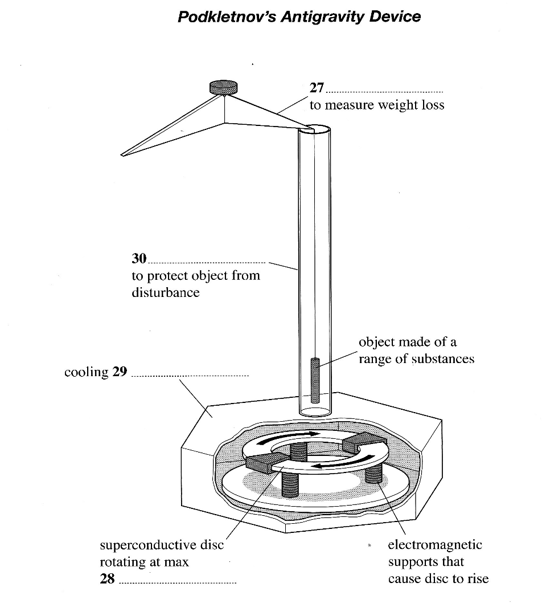

<!-- 원본: ACADEMIC24/reading (레거시 서버에서 2026-11-14 수집, 정답 제거) -->
<div class="legacy-content"><div id="pageContainer">
<div class="page" id="page-0">
<div class="flex flex-col md:flex-row gap-6">
<div class="w-full md:w-1/2 max-h-[600px] overflow-y-auto">
<h3 class="text-xl font-semibold text-purple-800 mb-4">You should spend about
                                    20 minutes on <b>Questions 1 - 13,</b> which are based on this passage 1.
                                </h3>
<p class="text-gray-700 leading-relaxed">
</p><div style="width:800px; border:1px solid #bbb; padding:20px;">
<h1 style="font-size:30px;">
<center>Ocean acidification</center>
</h1>
<br/>
<div>
<b>Caspar Henderson reports on some new concerns.</b>
<br/>
<div style="height:10px;"></div>
                                        A few years ago, biologist Victoria Fabry, saw the future of the world’s oceans
                                        in a jar. She was aboard a research ship in the North Pacific, carrying out
                                        experiments on a species of pteropod – small molluscs with shells up to a
                                        centimetre long, which swim in a way that resembles butterfly flight, propelled
                                        by small flaps. Something strange was happening in Fabry’s jars. ‘The pteropods
                                        were still swimming, but their shells were visibly dissolving,’ says Fabry. She
                                        realised that the animals’ respiration had increased the carbon dioxide (Co2) in
                                        the jars, which had been scaled for 48 hours, changing the water’s chemistry to
                                        a point where the calcium carbonate in the pteropods’ shells had started to
                                        dissolve. What Fabry had stumbled on was a hint of ‘the other Co2 problem’.
                                        <br/>
<div style="height:10px;"></div>
                                        It has taken several decades for climate change to be recognised as a serious
                                        threat. But another result of our fossil- fuel habit – ocean acidification – has
                                        only begun to be researched in the last few years. Its impact could be
                                        momentous, says Joanie Kleypas of the National Centre for Atmospheric Research
                                        in Boulder Colorado.
                                        <br/>
<div style="height:10px;"></div>
                                        Co2 forms carbonic acid when it dissolves in water, and the oceans are soaking
                                        up more and more of it. Recent studies show that the seas have absorbed about a
                                        third of all the fossil-fuel carbon released into the atmosphere since the
                                        beginning of the industrial revolution in the mid-eighteenth century, and they
                                        will soak up much more over the next century. Yet until quite recently, many
                                        people dismissed the idea that humanity could alter the acidity of the oceans,
                                        which cover 71 % of the planet’s surface to an average depth of about four
                                        kilometres. The ocean’s natural buffering capacity was assumed to be capable of
                                        preventing any changes in acidity even with a massive increase in Co2 levels.
                                        <br/>
<div style="height:10px;"></div>
                                        And it is – but only if the increase happens slowly, over hundreds of thousands
                                        of years. Over this timescale, the release of carbonates from rocks on land and
                                        from ocean sediments can neutralise the dissolved C02, just like dropping chalk
                                        in an acid. Levels of C02 are now rising so fast that they are overwhelming the
                                        oceans’ buffering capacity.
                                        <br/>
<div style="height:10px;"></div>
                                        In 2003 Ken Caldeira of the Carnegie Institution in Stanford and Michael Wickett
                                        at the Lawrence Livermore National Laboratory calculated that the absorption of
                                        fossil C02 could make the oceans more acidic over the next few centuries than
                                        they have been for 300 million years, with the possible exception of rare
                                        catastrophic events. The potential seriousness of the effect was underlined in
                                        2005 by the work of James Zachos of the University of California and his
                                        colleagues, who studied one of those rare catastrophic events. They showed that
                                        the mass extinction of huge numbers of deep-sea creatures around 55 million
                                        years ago was caused by ocean acidification after the release of around 4500
                                        giga-tonnes of carbon. It took over 100,000 years for the oceans to return to
                                        their normal state.
                                        <br/>
<div style="height:10px;"></div>
                                        Around the same time as the Zachos paper, the UK’s Royal Society published the
                                        first comprehensive report on ocean acidification. It makes grim reading,
                                        concluding that ocean acidification is inevitable without drastic cuts in
                                        emissions. Marine ecosystems, especially coral reefs, are likely to be affected,
                                        with fishing and tourism-based around reefs losing billions of dollars each
                                        year. Yet the report also stressed that there is huge uncertainty about the
                                        effects on marine life.
                                        <br/>
<div style="height:10px;"></div>
                                        The sea creatures most likely to be affected are those that make their shells or
                                        skeletons from calcium carbonate, including tiny plankton and huge corals. Their
                                        shells and skeletons do not dissolve only because the upper layers of the oceans
                                        are supersaturated with calcium carbonate. Acidification reduces carbonate Ion
                                        concentrations, making it harder for organisms to build their shells or
                                        skeletons. When the water drops below the saturation point, these structures
                                        will start to dissolve. Calcium carbonate comes in two different forms,
                                        aragonite and calcite, aragonite being more soluble. So organisms with aragonite
                                        structures such as corals will be hardest hit.
                                        <br/>
<div style="height:10px;"></div>
                                        So far the picture looks relentlessly gloomy, but could there actually be some
                                        positive results from adding so much C02 to the seas? One intriguing finding,
                                        says Ulf Riebesell of the Leibniz Institute of Marine Sciences in Kiel Germany,
                                        concerns gases that influence climate. A few experiments suggest that in more
                                        acidic conditions, microbes will produce more volatile organic compounds such as
                                        dimethyl sulphide, some of which escapes to the atmosphere and causes clouds to
                                        develop. More clouds would mean cooler conditions, which could potentially slow
                                        global warming.
                                        <br/>
<div style="height:10px;"></div>
                                        Calculating the effect of ocean acidification on people and economies is
                                        virtually impossible, but it could be enormous. Take the impact on tropical
                                        corals, assuming that warming and other pressures such as pollution do not
                                        decimate them first. Reefs protect the shorelines of many countries.
                                        Acidification could start eating away at reefs just when they are needed more
                                        than ever because of rising sea levels.
                                        <br/>
<div style="height:10px;"></div>
                                        ‘No serious scientist believes the oceans will be devoid of life,’ says
                                        Caldeira. ‘Wherever there is light and nutrients, something will live. A likely
                                        outcome will be a radical simplification of the ecosystem. ‘Taking this and
                                        other scientists’ views into account, it seems clear that acidification will
                                        mean the loss of many species so our children will not see the amazingly
                                        beautiful things that we can. It is important to tell them to go and see the
                                        corals now before it is too late.
                                    </div>
</div>
</div>
<div class="w-full md:w-1/2 max-h-[600px] overflow-y-auto">
<div class="question mb-6">
<div>
<h2 style="font-size:20px;"><b>Questions 1-7</b></h2>
<p>
                                            Answer the questions below.<br/>
                                            Choose <b>NO MORE THAN THREE WORDS AND / OR A NUMBER</b> for each answer
                                        </p>
</div>
<br/>
<div>
<b>1.</b> What does the pteropod use to move through the water? <input autocomplete="off" class="border border-purple-300 rounded px-3 py-2 w-full bg-white text-gray-800" name="q1" placeholder="(1)" style="width:150px; border:0; border-bottom:1px solid #000; text-align:center;" type="text"/><br/>
<div style="height:5px;"></div>
<b>2.</b> Which part of the pteropods was being damaged by increased
                                        acidification? <input autocomplete="off" class="border border-purple-300 rounded px-3 py-2 w-full bg-white text-gray-800" name="q2" placeholder="(2)" style="width:150px; border:0; border-bottom:1px solid #000; text-align:center;" type="text"/><br/>
<div style="height:5px;"></div>
<b>3.</b> What proportion of the carbon released over the last 200 years has
                                        been taken
                                        in by the oceans? <input autocomplete="off" class="border border-purple-300 rounded px-3 py-2 w-full bg-white text-gray-800" name="q3" placeholder="(3)" style="width:150px; border:0; border-bottom:1px solid #000; text-align:center;" type="text"/><br/>
<div style="height:5px;"></div>
<b>4.</b> Where do carbonates enter the oceans from? <input autocomplete="off" class="border border-purple-300 rounded px-3 py-2 w-full bg-white text-gray-800" name="q4" placeholder="(4)" style="width:150px; border:0; border-bottom:1px solid #000; text-align:center;" type="text"/><br/>
<div style="height:5px;"></div>
<b>5.</b> How long did the oceans need to recover after the destruction of
                                        marine life
                                        by acidification 55 million years ago? <input autocomplete="off" class="border border-purple-300 rounded px-3 py-2 w-full bg-white text-gray-800" name="q5" placeholder="(5)" style="width:150px; border:0; border-bottom:1px solid #000; text-align:center;" type="text"/><br/>
<div style="height:5px;"></div>
<b>6.</b> Which businesses will suffer if reefs are damaged? <input autocomplete="off" class="border border-purple-300 rounded px-3 py-2 w-full bg-white text-gray-800" name="q6" placeholder="(6)" style="width:150px; border:0; border-bottom:1px solid #000; text-align:center;" type="text"/><br/>
<div style="height:5px;"></div>
<b>7.</b> What type of creatures makes their skeleton out of aragonite? <input autocomplete="off" class="border border-purple-300 rounded px-3 py-2 w-full bg-white text-gray-800" name="q7" placeholder="(7)" style="width:150px; border:0; border-bottom:1px solid #000; text-align:center;" type="text"/><br/>
<div style="height:5px;"></div>
</div>
<br/>
<div class="question mb-6">
<div>
<h2 style="font-size:20px;"><b>Questions 8-12</b></h2>
<p>
                                                Complete the flow-chart below.<br/>
                                                Choose <b>NO MORE THAN TWO WORDS AND/OR A NUMBER</b> from the passage
                                                for
                                                each answer.<br/>
                                                Write your answers in boxes 8 - 12 on your answer sheet.
                                            </p>
</div>
<br/>
<div>
<div style="padding:10px; width:800px;">
<center><b>A Possible Benefit from Increased CO2 Levels in the Sea</b>
</center><br/><br/>
<div style="border:1px solid #000; padding:10px; width:700px; margin:0 auto; display:flex; justify-content: center;">
                                                    Increased ocean acidification
                                                </div>
<div style="padding:10px; width:700px; margin:0 auto; text-align: center; display:flex; justify-content: center;">

</div>
<div style="border:1px solid #000; padding:10px; width:700px; margin:0 auto; display:flex; justify-content: center;">
                                                    Large quantities of organic compounds made by <b>8</b>
<input autocomplete="off" class="border border-purple-300 rounded px-3 py-2 w-full bg-white text-gray-800" name="q8" placeholder="(8)" style="width:150px; border:0; border-bottom:1px solid #000; text-align:center;" type="text"/>
</div>
<div style="padding:10px; width:700px; margin:0 auto; text-align: center; display:flex; justify-content: center;">

</div>
<div style="border:1px solid #000; padding:10px; width:700px; margin:0 auto; display:flex; justify-content: center;">
                                                    Transfer to <b>9</b> <input autocomplete="off" class="border border-purple-300 rounded px-3 py-2 w-full bg-white text-gray-800" name="q9" placeholder="(9)" style="width:150px; border:0; border-bottom:1px solid #000; text-align:center;" type="text"/>
</div>
<div style="padding:10px; width:700px; margin:0 auto; text-align: center; display:flex; justify-content: center;">

</div>
<div style="border:1px solid #000; padding:10px; width:700px; margin:0 auto; display:flex; justify-content: center;">
                                                    <b>10.</b> <input autocomplete="off" class="border border-purple-300 rounded px-3 py-2 w-full bg-white text-gray-800" name="q10" placeholder="(10)" style="width:150px; border:0; border-bottom:1px solid #000; text-align:center;" type="text"/>
                                                    are formed
                                                </div>
<div style="padding:10px; width:700px; margin:0 auto; text-align: center; display:flex; justify-content: center;">

</div>
<div style="border:1px solid #000; padding:10px; width:700px; margin:0 auto; display:flex; justify-content: center;">
                                                     <b>11.</b> <input autocomplete="off" class="border border-purple-300 rounded px-3 py-2 w-full bg-white text-gray-800" name="q11" placeholder="(11)" style="width:150px; border:0; border-bottom:1px solid #000; text-align:center;" type="text"/>
                                                    temperatures
                                                </div>
<div style="padding:10px; width:700px; margin:0 auto; text-align: center; display:flex; justify-content: center;">

</div>
<div style="border:1px solid #000; padding:10px; width:700px; margin:0 auto; display:flex; justify-content: center;">
                                                    Reduction in rate of  <b>12.</b> <input autocomplete="off" class="border border-purple-300 rounded px-3 py-2 w-full bg-white text-gray-800" name="q12" placeholder="(12)" style="width:150px; border:0; border-bottom:1px solid #000; text-align:center;" type="text"/>
</div>
</div>
</div>
</div>
<div class="question mb-6">
<div>
<h2 style="font-size:20px;"><b>Questions 13</b></h2>
<p>
                                                Choose the correct letter <b>A, B, C or D</b><br/><br/>
                                                Write the correct letter in boxes 13 on your answer sheet.
                                            </p>
</div>
<br/>
<div>
<b>13.</b>    Which of the following statements best summarises
                                            the writer’s view of
                                            the passage?<br/><br/>
<div class="space-y-2 ml-6" id="question-13">
<label class="flex items-center"><input autocomplete="off" class="mr-2 w-4 h-4 accent-purple-600" name="q13" type="radio" value="A"/><b>A.</b> We
                                                    will have to wait and see if acidification has serious
                                                    effects.</label>
<label class="flex items-center"><input autocomplete="off" class="mr-2 w-4 h-4 accent-purple-600" name="q13" type="radio" value="B"/><b>B.</b> It is
                                                    clear that acidification will cause huge damage to marine
                                                    life.</label>
<label class="flex items-center"><input autocomplete="off" class="mr-2 w-4 h-4 accent-purple-600" name="q13" type="radio" value="C"/><b>C.</b> It is
                                                    likely that increased CO2 will change marine ecosystems
                                                    considerably.</label>
<label class="flex items-center"><input autocomplete="off" class="mr-2 w-4 h-4 accent-purple-600" name="q13" type="radio" value="D"/><b>D.</b> The
                                                    theory that increased CO2 could have positive results is
                                                    believable.</label>
</div>
</div>
</div>
</div>
</div>
</div>
</div>
<div class="page" id="page-1">
<div class="flex flex-col md:flex-row gap-6">
<div class="w-full md:w-1/2 max-h-[600px] overflow-y-auto">
<h3 class="text-xl font-semibold text-purple-800 mb-4">You should spend
                                    about 20 minutes on Questions <b>14-26</b> which are based on this passage 2.</h3>
<p class="text-gray-700 leading-relaxed">
</p><div style="width:800px; border:1px solid #bbb; padding:20px;">
<h1 style="font-size:30px;">
<center><b style="font-size: 24px;">A New Fair Trade Organization</b></center>
</h1>
<br/>
<div>
                                        Trade has, so far, proved ineffective in solving the major problems faced by
                                        most nations. However, the answer to the injustices of the existing trade regime
                                        is not no trade, but fair trade.
                                        <br/>
<div style="height:10px;"></div>
                                        The existing regime forbids poor nations from following the path taken by the
                                        rich. With the exceptions of Switzerland, Belgium and the Netherlands, all the
                                        nations that have become independently wealthy did so with the help of a
                                        mechanism economists call ‘infant industry protection’: defending new sectors
                                        from foreign competition until they are big enough to compete on equal terms.
                                        The textile industry in Britain, for example, on which the Industrial Revolution
                                        was built in the nineteenth century, was nurtured and promoted by means of
                                        tariffs (or trade taxes) and the outright prohibition of competing goods.
                                        Between 1864 and 1913, the US was the most heavily protected nation on earth.
                                        Only when these countries had established technological and commercial
                                        superiority did they suddenly discover the virtues of unimpeded competition.
                                        <br/>
<div style="height:10px;"></div>
                                        For nations to develop in direct competition with countries with established
                                        industries is like learning to swim in a fast-flowing river: you are likely to
                                        be swept away and drowned long before you acquire the necessary expertise. Your
                                        competitors have experience, legal rights and established marketing networks on
                                        their side; your infant industries have none of these. It is all but impossible,
                                        in other words, for poor nations to extract money from the rich unless they can
                                        safeguard some key parts of their economies.
                                        <br/>
<div style="height:10px;"></div>
                                        Clearly, nations that are currently poor should be permitted to defend certain
                                        industries from foreign competition with the help of tariff barriers and
                                        subsidies. Rich nations, on the other hand, should be permitted neither to
                                        subsidise their industries nor to impose tariffs on imports. Nations should be
                                        forced gradually to lift their protections as they develop. So, the first
                                        function of what we might call the Fair Trade Organisation (FTO) would be to lay
                                        down the rules governing the protections and privileges permitted at different
                                        stages of development.
                                        <br/>
<div style="height:10px;"></div>
                                        A fair-trade system should, or so we should hope, slowly push the world towards
                                        genuine free trade, which is likely to be the most equitable means of governing
                                        nations’ relationships with each other. This system could provide a potent means
                                        by which the world could begin to move towards the economic equality that is an
                                        essential precondition for political equality. It would not, however, directly
                                        address some of the other critical problems that the people of poor nations
                                        confront – such as inadequate working conditions, environmental devastation and
                                        the inordinate power of the multinational corporations.
                                        <br/>
<div style="height:10px;"></div>
                                        Many campaigners in the rich world have suggested that the best way to raise
                                        standards is to discriminate, through tariffs or other measures, against imports
                                        from countries where workers or the environment arc mistreated. This approach
                                        has also been advocated by trades unions seeking to protect members’ jobs from
                                        foreigners. Unsurprisingly, it is deeply resented by the very people it is
                                        supposed to help: the workers of the poor world.
                                        <br/>
<div style="height:10px;"></div>
                                        If our purpose is to regulate international trade, then it surely makes sense to
                                        address the behaviour, not of nation states, but of the multinational
                                        corporations operating between them. So a second function of the FTO could be to
                                        set the standards to which those corporations must conform. A corporation would
                                        not be permitted to trade between nations unless it could demonstrate that, at
                                        every stage of manufacture and distribution, its own operations and those of its
                                        suppliers met the necessary standards.
                                        <br/>
<div style="height:10px;"></div>
                                        If, for example, a food-processing corporation based in Europe wished to import
                                        cocoa from an African country, it would need to demonstrate that the plantation
                                        owners it bought from were not using banned pesticides, expanding into protected
                                        forests or failing to conform to whatever other standards the FTO set. The
                                        company’s performance would be assessed, at its own expense, by monitors
                                        accredited to the organisation.
                                        <br/>
<div style="height:10px;"></div>
                                        One other precondition of justice is that producers and consumers should carry
                                        their own costs, rather than dumping them on other people. The monitors deployed
                                        by the FTO could determine whether or not companies are paying a fair price for
                                        the resources they use. Companies would, among other costs, have to buy enough
                                        of a nation’s carbon quota to cover the fossil fuel they consume. One of the
                                        many beneficial impacts of such full-cost accounting would be that everything
                                        that could be processed in the country of origin would be. No multinational
                                        company would export logs, coffee beans or cotton, as it requires far more
                                        (costly) energy to transport these bulky resources from one place to another
                                        than would be involved in exporting the finished products – furniture, instant
                                        coffee and T-shirts (all currently manufactured on the other side of the world).
                                        Those nations which are currently locked into the export of raw materials would
                                        become the most favoured locations for manufacturing.
                                        <br/>
<div style="height:10px;"></div>
                                        Under this scheme, export growth comes to measure something quite different. At
                                        present it represents a mixture of gains and losses, which are misleadingly
                                        compounded into a single figure. The loss of natural resources is ‘added’ to the
                                        genuine addition of value provided by the application of labour. The FTO system
                                        would effectively separate these measures. The extraction and export of natural
                                        resources would in most cases be accounted as a loss. The application of human
                                        labour would be measured as a gain. Nations would be able to see immediately
                                        whether they were being enriched or impoverished through trade. To introduce
                                        these measures in the face of the resistance of the world’s most powerful
                                        governments and companies would require severe and unusual methods. But the goal
                                        of universal fair trade would permit the global economic levelling without which
                                        there can be no justice.
                                    </div>
</div>
</div>
<div class="w-full md:w-1/2 max-h-[600px] overflow-y-auto">
<div class="question mb-6">
<div>
<h2 style="font-size:20px;"><b>Questions 14-19</b></h2><br/>
<p>Choose the correct letter <b>A, B, C or D</b></p>
</div>
<br/>
<div>
                                        Write your answers in boxes 14 - 19 on your answer sheet.<br/><br/>
<div>
<b>14</b>   The writer refers to textile production in Britain in
                                            order to
                                            <br/><br/>
<div class="space-y-2 ml-6" id="question-14">
<label class="flex items-center"><input autocomplete="off" class="mr-2 w-4 h-4 accent-purple-600" name="q14" type="radio" value="A"/><b>A</b> point
                                                    out how differently industries were financed in the
                                                    past,</label>
<label class="flex items-center"><input autocomplete="off" class="mr-2 w-4 h-4 accent-purple-600" name="q14" type="radio" value="B"/><b>B</b> show
                                                    how unnecessary tariff barriers arc for countries today.</label>
<label class="flex items-center"><input autocomplete="off" class="mr-2 w-4 h-4 accent-purple-600" name="q14" type="radio" value="C"/><b>C</b> help
                                                    the reader understand how infant industry protection
                                                    works.</label>
<label class="flex items-center"><input autocomplete="off" class="mr-2 w-4 h-4 accent-purple-600" name="q14" type="radio" value="D"/><b>D</b> 
                                                    compare European trade development with that of the United
                                                    States.</label>
</div>
</div>
<br/>
<br/>
<div>
<b>15</b>    What is the writer’s main point in the third
                                            paragraph?
                                            <br/><br/>
<div class="space-y-2 ml-6" id="question-15">
<label class="flex items-center"><input autocomplete="off" class="mr-2 w-4 h-4 accent-purple-600" name="q15" type="radio" value="A"/><b>A</b> 
                                                    Businesses will succeed if they learn from established
                                                    companies.</label>
<label class="flex items-center"><input autocomplete="off" class="mr-2 w-4 h-4 accent-purple-600" name="q15" type="radio" value="B"/><b>B</b> 
                                                    Detailed market research is often neglected in developing
                                                    countries.</label>
<label class="flex items-center"><input autocomplete="off" class="mr-2 w-4 h-4 accent-purple-600" name="q15" type="radio" value="C"/><b>C</b> You
                                                    have to be prepared to adapt your products quickly to follow
                                                    fashion.</label>
<label class="flex items-center"><input autocomplete="off" class="mr-2 w-4 h-4 accent-purple-600" name="q15" type="radio" value="D"/><b>D</b> New
                                                    industries in poor countries will probably fail without
                                                    protection.</label>
</div>
</div>
<br/>
<div>
<b>16</b>    According to the writer, a fair trade system could
                                            have the effect of<br/><br/>
<div class="space-y-2 ml-6" id="question-16">
<label class="flex items-center"><input autocomplete="off" class="mr-2 w-4 h-4 accent-purple-600" name="q16" type="radio" value="A"/><b>A</b> 
                                                    improving safety in the majority of workplaces around the
                                                    world</label>
<label class="flex items-center"><input autocomplete="off" class="mr-2 w-4 h-4 accent-purple-600" name="q16" type="radio" value="B"/><b>B</b> 
                                                    preventing the continued destruction of endangered wildlife
                                                    habitats,</label>
<label class="flex items-center"><input autocomplete="off" class="mr-2 w-4 h-4 accent-purple-600" name="q16" type="radio" value="C"/><b>C</b> 
                                                    encouraging states to work together in a more even-handed
                                                    way.</label>
<label class="flex items-center"><input autocomplete="off" class="mr-2 w-4 h-4 accent-purple-600" name="q16" type="radio" value="D"/><b>D</b> making
                                                    politicians agree to more representative systems of
                                                    government.</label>
</div>
</div>
<br/>
<div>
<b>17</b>    What point is the writer making in the sixth
                                            paragraph?<br/><br/>
<div class="space-y-2 ml-6" id="question-17">
<label class="flex items-center"><input autocomplete="off" class="mr-2 w-4 h-4 accent-purple-600" name="q17" type="radio" value="A"/><b>A</b> The
                                                    trades unions’ aim is to help foreign workers gain better
                                                    conditions.</label>
<label class="flex items-center"><input autocomplete="off" class="mr-2 w-4 h-4 accent-purple-600" name="q17" type="radio" value="B"/><b>B</b> The
                                                    trades unions are concerned about the effects of imports on local
                                                    jobs.</label>
<label class="flex items-center"><input autocomplete="off" class="mr-2 w-4 h-4 accent-purple-600" name="q17" type="radio" value="C"/><b>C</b> 
                                                    Workers in poor countries are grateful for the trades unions’
                                                    support.</label>
<label class="flex items-center"><input autocomplete="off" class="mr-2 w-4 h-4 accent-purple-600" name="q17" type="radio" value="D"/><b>D</b> 
                                                    Campaigners are right to suggest imposing tariffs against bad
                                                    treatment.</label>
</div>
</div>.
                                        <br/>
<div>
<b>18</b>    According to the writer, what is one of the benefits
                                            of full-cost accounting?
                                            <br/><br/>
<div class="space-y-2 ml-6" id="question-18">
<label class="flex items-center"><input autocomplete="off" class="mr-2 w-4 h-4 accent-purple-600" name="q18" type="radio" value="A"/><b>A</b> 
                                                    Factories would be set up and jobs created in the country of
                                                    origin.</label>
<label class="flex items-center"><input autocomplete="off" class="mr-2 w-4 h-4 accent-purple-600" name="q18" type="radio" value="B"/><b>B</b> 
                                                    Multinational companies would consume fewer natural
                                                    resources.</label>
<label class="flex items-center"><input autocomplete="off" class="mr-2 w-4 h-4 accent-purple-600" name="q18" type="radio" value="C"/><b>C</b> The
                                                    export of finished products around the world would
                                                    decrease</label>
<label class="flex items-center"><input autocomplete="off" class="mr-2 w-4 h-4 accent-purple-600" name="q18" type="radio" value="D"/><b>D</b> 
                                                    Countries would be able to keep their resources for the domestic
                                                    market.</label>
</div>
</div>
<br/>
<div>
<b>19</b>    What conclusion does the writer come to about the FTO
                                            system?<br/>
<div class="space-y-2 ml-6" id="question-19">
<label class="flex items-center"><input autocomplete="off" class="mr-2 w-4 h-4 accent-purple-600" name="q19" type="radio" value="A"/><b>A</b> It
                                                    would help to combat injustice in its many different
                                                    forms.</label><br/>
<label class="flex items-center"><input autocomplete="off" class="mr-2 w-4 h-4 accent-purple-600" name="q19" type="radio" value="B"/><b>B</b> It
                                                    would be difficult to introduce but would be worth the
                                                    effort.</label><br/>
<label class="flex items-center"><input autocomplete="off" class="mr-2 w-4 h-4 accent-purple-600" name="q19" type="radio" value="C"/><b>C</b> States
                                                    all over the world would earn more through trade as a result of
                                                    it.</label><br/>
<label class="flex items-center"><input autocomplete="off" class="mr-2 w-4 h-4 accent-purple-600" name="q19" type="radio" value="D"/><b>D</b> 
                                                    Multinationals would accept it because it measures exports more
                                                    precisely.</label>
</div>
</div>
<br/>
</div>
</div>
<div class="question mb-6">
<div>
<h2 style="font-size:20px;"><b>Questions 20-26</b></h2><br/>
<p>Complete the summary below.</p><br/>
<p>Choose <b>NO MORE THAN TWO WORDS</b> from the passage for each answer.</p>
<br/>
<p>Write your answers in boxes 20 - 26 on your answer sheet.</p>
</div>
<br/>
<div style="width:750px;">
<center><b>A Proposal for Regulating Multinational Corporations</b></center>
<br/>
                                        The FTO would determine the <b>20.</b> <input autocomplete="off" class="border border-purple-300 rounded px-3 py-2 w-full bg-white text-gray-800" name="q20" placeholder="(20)" style="width:150px; border:0; border-bottom:1px solid #000; text-align:center;" type="text"/>
                                        for the multinational corporations to follow. In this way, a multinational
                                        corporation would have to prove that all aspects of the way it produced its
                                        goods and the systems for their <b>21.</b> <input autocomplete="off" class="border border-purple-300 rounded px-3 py-2 w-full bg-white text-gray-800" name="q21" placeholder="(21)" style="width:150px; border:0; border-bottom:1px solid #000; text-align:center;" type="text"/>
                                        to customers was in line with FTO requirements. Similarly it would need to
                                        satisfy the FTO that the processes employed by any <b>22.</b> <input autocomplete="off" class="border border-purple-300 rounded px-3 py-2 w-full bg-white text-gray-800" name="q22" placeholder="(22)" style="width:150px; border:0; border-bottom:1px solid #000; text-align:center;" type="text"/>
                                        that it used were also acceptable.<br/><br/>
                                        As an illustration, in order to source cocoa from Africa, a corporation would
                                        have to ensure that no illegal <b>23.</b> <input autocomplete="off" class="border border-purple-300 rounded px-3 py-2 w-full bg-white text-gray-800" name="q23" placeholder="(23)" style="width:150px; border:0; border-bottom:1px solid #000; text-align:center;" type="text"/>
                                        were being used by the <b>24.</b> <input autocomplete="off" class="border border-purple-300 rounded px-3 py-2 w-full bg-white text-gray-800" name="q24" placeholder="(24)" style="width:150px; border:0; border-bottom:1px solid #000; text-align:center;" type="text"/>
                                        during cultivation and that they had not taken over land from <b>25.</b> <input autocomplete="off" class="border border-purple-300 rounded px-3 py-2 w-full bg-white text-gray-800" name="q25" placeholder="(25)" style="width:150px; border:0; border-bottom:1px solid #000; text-align:center;" type="text"/><br/>
<div style="height:5px;"></div>
<br/>
                                        It would not be sufficient for multinational corporations to say that these
                                        points had been checked. Their conduct would have to be inspected by <b>26.</b>
<input autocomplete="off" class="border border-purple-300 rounded px-3 py-2 w-full bg-white text-gray-800" name="q26" placeholder="(26)" style="width:150px; border:0; border-bottom:1px solid #000; text-align:center;" type="text"/><br/>
<div style="height:5px;"></div>
                                        appointed by the FTO.
                                    </div>
</div>
</div>
</div>
</div>
<div class="page" id="page-2">
<div class="flex flex-col md:flex-row gap-6">
<div class="w-full md:w-1/2 max-h-[600px] overflow-y-auto">
<h3 class="text-xl font-semibold text-purple-800 mb-4">You should spend
                                    about
                                    20 minutes on <b>Questions 27-40</b> which are based on this passage 3.
                                </h3>
<p class="text-gray-700 leading-relaxed">
</p><div style="width:800px; border:1px solid #bbb; padding:20px;">
<h1 style="font-size:30px;">
<center>The First Antigravity Machine</center>
</h1>
<br/>
<div>
                                        It was one of the biggest science stories of the 1990s. Even now, the facts
                                        behind it remain hotly disputed. And small wonder, for if the claims made for
                                        the small disc, the focus of the controversy, are true, it may be possible to
                                        break through one of the great barriers in the scientific world and control the
                                        most potent of cosmic forces: gravity. Huge innovations in flight and space
                                        travel could arise from that.
                                        <br/>
<div style="height:10px;"></div>
                                        The first gravity-blocking system to be taken seriously by scientists appeared
                                        in a laboratory in Tampere University of Technology, Finland. A Russian
                                        scientist named Dr. Evgeny Podkletnov created a disc 275mm across, made from a
                                        substance which combined copper, barium and the ‘rare Earth metal’ called
                                        yttrium, which is known to be a high-temperature superconductor (a substance
                                        that conducts electricity without resistance). When chilled with liquid nitrogen
                                        at -196° C (a high temperature compared with other superconductors), this
                                        material loses all its electrical resistance and can levitate (lift) in a
                                        magnetic field. That may seem amazing for a ceramic-like material – and it won a
                                        Nobel Prize for the scientists Karl Muller and Johannes Bednorz, who first
                                        demonstrated it in the 1980s. But according to Podkletnov, the disc had another
                                        far more astounding property.
                                        <br/>
<div style="height:10px;"></div>
                                        In 1992, while experimenting with rotating superconductors, Podkletnov noticed
                                        that pipe-smoke from a nearby researcher was drifting into a vertical column
                                        above the spinning disc. Intrigued by this phenomenon, he decided to devise an
                                        experiment to investigate further. A superconductive disc, surrounded by liquid
                                        nitrogen was magnetically levitated and rotated at high speed – up to 5,000
                                        revolutions per minute (rpm) in a magnetic field. An object was suspended from a
                                        sensitive balance above the disc. It was enclosed in a glass tube to shield it
                                        from any effects of air currents. During the course of a series of tests,
                                        Podkletnov was able to observe that the object lost a variable amount of weight
                                        from less than 0.5 percent to 2 percent of its total weight. The effect was
                                        noted with a range of materials from ceramics to wood. The effect was slight,
                                        yet the implications were revolutionary: the disc appeared to be partly
                                        shielding the object from the gravitational pull of the earth.
                                        <br/>
<div style="height:10px;"></div>
                                        This was just the start, claimed Podkletnov. While far short of the 100 percent
                                        reduction in weight needed to send astronauts into space, for example, it was
                                        infinitely greater than the amount predicted by the best theory of gravity
                                        currently in existence. Einstein’s theory of general relativity (GR), published
                                        in 1905. According to Einstein, gravity is not some kind of ‘force field’ like
                                        magnetism, which can – in principle at least – be screened out. Instead, GR
                                        views gravity as a distortion in the very fabric of space and time that
                                        permeates the whole cosmos. As such, any claim to have shielded objects from
                                        gravity is to defy Einstein himself.
                                        <br/>
<div style="height:10px;"></div>
                                        Podkletnov’s claims were subjected to intense scrutiny when he submitted them
                                        for publication. The UK Institute of Physics had Podkletnov’s paper checked by
                                        three independent referees, but none could find a fatal flaw. His research was
                                        set to appear in the respected Journal of Physics D when events took an
                                        unexpected turn. The claims were leaked to the media, sparking worldwide
                                        coverage of his apparent breakthrough. Then Podkletnov suddenly withdrew the
                                        paper from publication and refused to talk to the press.
                                        <br/>
<div style="height:10px;"></div>
                                        Rumours began to circulate of unknown backers, demanding silence until the
                                        device had been fully patented. But for many scientists, the strange events were
                                        all too familiar. Podkletnov was just the latest in a long line of people to
                                        have made claims about defying gravity. Most of these have come from madcap
                                        inventors, with bizarre devices, often with some kind of spinning disc. But
                                        occasionally respectable academics have made such claims as well.
                                        <br/>
<div style="height:10px;"></div>
                                        One instance of this occurred in the late 198Os when scientists at Tohoku
                                        University, Japan, made headlines with research suggesting that apparatus known
                                        as the gyroscope, lost 0.01 percent of its weight when spinning at up to 13,000
                                        rpm. Oddly the effect only appeared if the gyroscope was spinning anticlockwise
                                        – raising suspicions that some mechanical peculiarity was to blame. Attempts by
                                        scientists at the University of Colorado to replicate the effect failed.
                                        <br/>
<div style="height:10px;"></div>
                                        Then Professor Giovanni Modanese, an Italian theoretical physicist, became
                                        interested. He had read an earlier paper by Podkletnov, hinting at a connection
                                        between superconductivity and gravity shielding. Modenese wondered if the
                                        magnetic field surrounding the superconductive disc might somehow assimilate
                                        part of the gravitational field under it. He published some calculations based
                                        on his idea in 1995 – and soon discovered that taking ‘antigravity’ seriously
                                        was a career-limiting move.
                                        <br/>
<div style="height:10px;"></div>
                                        The revelations about Podkletnov’s antigravity research led to reports of major
                                        corporations setting up their own studies. In 2000, the UK defence contractor
                                        BAE systems were said to have launched “Project Greenglow” to investigate
                                        Podkletnov’s gravity shield effect. Then it emerged that the US aircraft builder
                                        Boeing was also investigating, suggesting it too had an interest in the effect.
                                        Groups in other countries were also rumoured to be carrying out studies. Yet not
                                        one of the teams had reported confirmation of the original findings. Some
                                        projects have been wound up without producing results either way. So for the
                                        time being, it seems that the dream of controlling gravity will remain precisely
                                        that.
                                    </div>
</div>
</div>
<div class="w-full md:w-1/2 max-h-[600px] overflow-y-auto">
<div class="question mb-6">
<div>
<h2 style="font-size:20px;"><b>Questions 27-30</b></h2><br/>
<p>Label the diagram below. </p><br/>
<p>Choose <b>NO MORE THAN THREE WORDS AND/OR A NUMBER</b> from the passage for
                                            each answer.</p><br/>
<p>Write your answers in boxes 27 - 30 on your answer sheet.</p>
</div>
<br/>
<div>

<br/>
<br/>
<b>27.</b> <input autocomplete="off" class="border border-purple-300 rounded px-3 py-2 w-full bg-white text-gray-800" name="q27" placeholder="(27)" style="width:150px; border:0; border-bottom:1px solid #000; text-align:center;" type="text"/><br/>
<div style="height:5px;"></div>
<b>28.</b> <input autocomplete="off" class="border border-purple-300 rounded px-3 py-2 w-full bg-white text-gray-800" name="q28" placeholder="(28)" style="width:150px; border:0; border-bottom:1px solid #000; text-align:center;" type="text"/><br/>
<div style="height:5px;"></div>
<b>29.</b> <input autocomplete="off" class="border border-purple-300 rounded px-3 py-2 w-full bg-white text-gray-800" name="q29" placeholder="(29)" style="width:150px; border:0; border-bottom:1px solid #000; text-align:center;" type="text"/><br/>
<div style="height:5px;"></div>
<b>30.</b> <input autocomplete="off" class="border border-purple-300 rounded px-3 py-2 w-full bg-white text-gray-800" name="q30" placeholder="(30)" style="width:150px; border:0; border-bottom:1px solid #000; text-align:center;" type="text"/><br/>
<div style="height:5px;"></div>
</div>
</div>
<div class="question mb-6">
<div>
<h2 style="font-size:20px;"><b>Questions 31-35</b></h2>
</div>
<br/>
<div>
                                        Classify the following findings as belonging to<br/><br/>
                                            <b>A</b> Podkletnov
                                            <b>B</b> Tohoku University
                                            <b>C</b> Modanese
                                    </div>
<br/>
<div>
                                        Choose the correct letter A, B or C in boxes 31 – 35 on your answer
                                        sheet.<br/><br/>
<div>
<b>31</b>   The experiment only works if the equipment moves in a
                                            particular direction.<br/>
<div style="height:10px;"></div>
<div class="space-y-2 ml-6" id="question-31">
<label><input autocomplete="off" class="mr-2 w-4 h-4 accent-purple-600" name="q31" type="radio" value="A"/><b>A</b></label>    
                                                <label><input autocomplete="off" class="mr-2 w-4 h-4 accent-purple-600" name="q31" type="radio" value="B"/><b>B</b></label>    
                                                <label><input autocomplete="off" class="mr-2 w-4 h-4 accent-purple-600" name="q31" type="radio" value="C"/><b>C</b></label>
</div>
</div>
<br/>
<div>
<b>32</b>   Varying amounts of weight are lost as a result of the
                                            test.<br/>
<div style="height:10px;"></div>
<div class="space-y-2 ml-6" id="question-32">
<label><input autocomplete="off" class="mr-2 w-4 h-4 accent-purple-600" name="q32" type="radio" value="A"/><b>A</b></label>    
                                                <label><input autocomplete="off" class="mr-2 w-4 h-4 accent-purple-600" name="q32" type="radio" value="B"/><b>B</b></label>    
                                                <label><input autocomplete="off" class="mr-2 w-4 h-4 accent-purple-600" name="q32" type="radio" value="C"/><b>C</b></label>
</div>
</div>
<br/>
<div>
<b>33</b>    Gravity could be absorbed by a magnetic field.<br/>
<div style="height:10px;"></div>
<div class="space-y-2 ml-6" id="question-33">
<label><input autocomplete="off" class="mr-2 w-4 h-4 accent-purple-600" name="q33" type="radio" value="A"/><b>A</b></label>    
                                                <label><input autocomplete="off" class="mr-2 w-4 h-4 accent-purple-600" name="q33" type="radio" value="B"/><b>B</b></label>    
                                                <label><input autocomplete="off" class="mr-2 w-4 h-4 accent-purple-600" name="q33" type="radio" value="C"/><b>C</b></label>
</div>
</div>
<br/>
<div>
<b>34</b>   Superconductive material seems to screen an object
                                            from gravity.<br/>
<div style="height:10px;"></div>
<div class="space-y-2 ml-6" id="question-34">
<label><input autocomplete="off" class="mr-2 w-4 h-4 accent-purple-600" name="q34" type="radio" value="A"/><b>A</b></label>    
                                                <label><input autocomplete="off" class="mr-2 w-4 h-4 accent-purple-600" name="q34" type="radio" value="B"/><b>B</b></label>    
                                                <label><input autocomplete="off" class="mr-2 w-4 h-4 accent-purple-600" name="q34" type="radio" value="C"/><b>C</b></label>
</div>
</div>
<br/>
<div>
<b>35</b>   Weight loss occurs when the equipment rotates at
                                            speeds reaching 13,000 rpm.<br/>
<div style="height:10px;"></div>
<div class="space-y-2 ml-6" id="question-35">
<label><input autocomplete="off" class="mr-2 w-4 h-4 accent-purple-600" name="q35" type="radio" value="A"/><b>A</b></label>    
                                                <label><input autocomplete="off" class="mr-2 w-4 h-4 accent-purple-600" name="q35" type="radio" value="B"/><b>B</b></label>    
                                                <label><input autocomplete="off" class="mr-2 w-4 h-4 accent-purple-600" name="q35" type="radio" value="C"/><b>C</b></label>
</div>
</div>
</div>
</div>
<div class="question mb-6">
<div>
<h2 style="font-size:20px;"><b>Questions 36-40</b></h2><br/><br/>
<p>Do the following statements agree with information given in Reading Passage
                                            3?</p>
</div>
<br/>
<div>
                                        In boxes 36 – 40 on your answer sheet, write<br/><br/>
                                            <b>TRUE</b> if the statement agrees with the
                                        information<br/>
                                            <b>FALSE</b> if the statement contradicts the
                                        information<br/>
                                            <b>NOT GIVEN</b> if there is no information on this.<br/>
</div>
<br/>
<div>
<div>
<b>36</b>    Podkletnov won a prize for his initial work on
                                            superconductive substances.<br/>
<div class="space-y-2 ml-6" id="question-36">
<label class="flex items-center"><input autocomplete="off" class="mr-2 w-4 h-4 accent-purple-600" name="q36" type="radio" value="TRUE"/><b>TRUE</b></label>
<label class="flex items-center"><input autocomplete="off" class="mr-2 w-4 h-4 accent-purple-600" name="q36" type="radio" value="FALSE"/><b>FALSE</b></label>
<label class="flex items-center"><input autocomplete="off" class="mr-2 w-4 h-4 accent-purple-600" name="q36" type="radio" value="NOT GIVEN"/><b>NOT
                                                        GIVEN</b></label>
</div>
</div>
<br/>
<div>
<b>37</b>    A chance observation led Podkletnov to experiment
                                            with gravity blocking.<br/>
<div class="space-y-2 ml-6" id="question-37">
<label class="flex items-center"><input autocomplete="off" class="mr-2 w-4 h-4 accent-purple-600" name="q37" type="radio" value="TRUE"/><b>TRUE</b></label>
<label class="flex items-center"><input autocomplete="off" class="mr-2 w-4 h-4 accent-purple-600" name="q37" type="radio" value="FALSE"/><b>FALSE</b></label>
<label class="flex items-center"><input autocomplete="off" class="mr-2 w-4 h-4 accent-purple-600" name="q37" type="radio" value="NOT GIVEN"/><b>NOT
                                                        GIVEN</b></label>
</div>
</div>
<br/>
<div>
<b>38</b>    Einstein challenged earlier experiments on
                                            antigravity.<br/>
<div class="space-y-2 ml-6" id="question-38">
<label class="flex items-center"><input autocomplete="off" class="mr-2 w-4 h-4 accent-purple-600" name="q38" type="radio" value="TRUE"/><b>TRUE</b></label>
<label class="flex items-center"><input autocomplete="off" class="mr-2 w-4 h-4 accent-purple-600" name="q38" type="radio" value="FALSE"/><b>FALSE</b></label>
<label class="flex items-center"><input autocomplete="off" class="mr-2 w-4 h-4 accent-purple-600" name="q38" type="radio" value="NOT GIVEN"/><b>NOT
                                                        GIVEN</b></label>
</div>
</div>
<br/>
<div>
<b>39</b>    Modanese suffered professionally after following up
                                            Podkletnov’s findings.<br/>
<div class="space-y-2 ml-6" id="question-39">
<label class="flex items-center"><input autocomplete="off" class="mr-2 w-4 h-4 accent-purple-600" name="q39" type="radio" value="TRUE"/><b>TRUE</b></label>
<label class="flex items-center"><input autocomplete="off" class="mr-2 w-4 h-4 accent-purple-600" name="q39" type="radio" value="FALSE"/><b>FALSE</b></label>
<label class="flex items-center"><input autocomplete="off" class="mr-2 w-4 h-4 accent-purple-600" name="q39" type="radio" value="NOT GIVEN"/><b>NOT
                                                        GIVEN</b></label>
</div>
</div>
<br/>
<div>
<b>40</b>    An aircraft company announced that it had replicated
                                            Podkletnov’s results.<br/>
<div class="space-y-2 ml-6" id="question-40">
<label class="flex items-center"><input autocomplete="off" class="mr-2 w-4 h-4 accent-purple-600" name="q40" type="radio" value="TRUE"/><b>TRUE</b></label>
<label class="flex items-center"><input autocomplete="off" class="mr-2 w-4 h-4 accent-purple-600" name="q40" type="radio" value="FALSE"/><b>FALSE</b></label>
<label class="flex items-center"><input autocomplete="off" class="mr-2 w-4 h-4 accent-purple-600" name="q40" type="radio" value="NOT GIVEN"/><b>NOT
                                                        GIVEN</b></label>
</div>
</div>
</div>
</div>
</div>
</div>
</div>
</div>
</div>
